Two-stage Codecs¶
from dsc4ml.encoders import LocalEncoder, DistributedEncoder
from dsc4ml.decoders import FusionDecoder
import xarray as xr
import numpy as np
import numpy.random as npr
import matplotlib.pyplot as plt
import pandas as pd
plt.style.use('seaborn-darkgrid')
plt.rcParams['figure.figsize'] = [16, 6]
plt.rcParams['font.size'] = 14
plt.rcParams['image.cmap'] = 'Dark2'
DA = xr.DataArray
def generate_2d_dataset(n, ρ=0.0, sep=0.0):
μ = [1, 0]
Σ = [[1, ρ],
[ρ, 1]]
w = make_normal_unit_vector(2)
X = DA(npr.multivariate_normal(μ, Σ, size=n), dims=['n', 'd'])
y = np.sign(X @ w)
X += sep*y*w
return X, y
def sample(A, dim, size):
i_sample = npr.randint(A[dim].size, size=size)
return A[i_sample]
def calc_total_loss(γ):
def curry(A, B):
w = make_normal_unit_vector(A.sizes['d'])
mse = calc_mse_loss(A, B)
zero_one = calc_zero_one_loss(A, B)
return (1-γ)*mse + γ*zero_one
return curry
def calc_zero_one_loss(A, B):
return np.sign(A @ w) != np.sign(B @ w)
def calc_mse_loss(A, B):
return np.power(A - B, 2).sum('d')
def make_normal_unit_vector(d) -> '(d,)':
w = np.append(-1, np.ones(d-1))
w = w/np.sqrt(w @ w)
return xr.DataArray(w, dims='d')
def plot_decision_boundary(X):
p = [X.min(), X.max()]
plt.plot(p, p, '--', alpha=0.25)
w = make_normal_unit_vector(2)
Two-stage Non-distributed Encoders¶
for γ in [0, 1]:
npr.seed(0)
ρ = 0.5
sep = 0.2
p = 16
X, _ = generate_2d_dataset(300, ρ, sep)
protos = sample(X, 'n', p).rename(n='p')
q_indices = DA(npr.randint(2, size=p), dims='p')
codebook = sample(X, 'n', 2).rename(n='m')
enc = LocalEncoder(protos, q_indices, rate=2)
dec = FusionDecoder(codebook)
losses = list()
Z, _ = generate_2d_dataset(300, ρ, sep)
for i in range(10):
dec = dec.optimize(X, enc, γ, w)
enc = enc.optimize(X, dec, calc_total_loss(γ))
losses += [
{'dataset': 'train',
'loss_type': 'total',
'value': calc_total_loss(γ)(X, dec(enc(X))).mean().item(),
'i': i},
{'dataset': 'test',
'loss_type': 'total',
'value': calc_total_loss(γ)(Z, dec(enc(Z))).mean().item(),
'i': i},
{'dataset': 'train',
'loss_type': 'mse',
'value': calc_mse_loss(X, dec(enc(X))).mean().item(),
'i': i},
{'dataset': 'test',
'loss_type': 'mse',
'value': calc_mse_loss(Z, dec(enc(Z))).mean().item(),
'i': i},
{'dataset': 'train',
'loss_type': 'zero_one',
'value': calc_zero_one_loss(X, dec(enc(X))).mean().item(),
'i': i},
{'dataset': 'test',
'loss_type': 'zero_one',
'value': calc_zero_one_loss(Z, dec(enc(Z))).mean().item(),
'i': i},
]
losses = (pd.DataFrame(losses)
.pivot('i', ['loss_type', 'dataset'], 'value'))
plt.scatter(*enc.protos.T, c=np.sign(dec(enc(enc.protos.rename(p='n'))) @ w), marker='x', s=100)
plt.scatter(*dec.codebook.T, c=np.sign(dec.codebook @ w), marker='^', s=100)
plt.scatter(*X.T, c=np.sign(dec(enc(X)) @ w), alpha=0.15)
plot_decision_boundary(X)
plt.show()
(losses['total']
.plot(style='o--',
ax=plt.subplot(1, 3, 1),
title=f'Total loss ($\gamma = {γ:.2f}$)'))
(losses['mse']
.plot(style='o--',
ax=plt.subplot(1, 3, 2),
title='MSE loss'))
(losses['zero_one']
.plot(style='o--',
ax=plt.subplot(1, 3, 3),
title='0-1 loss'))
plt.show()
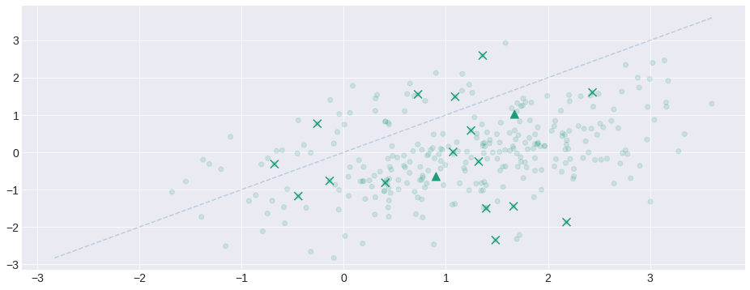
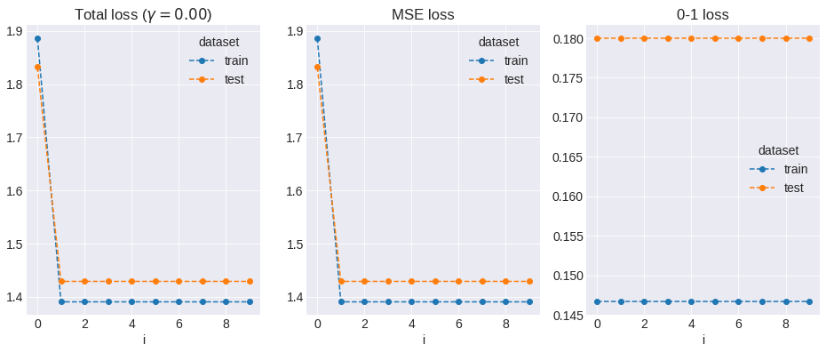
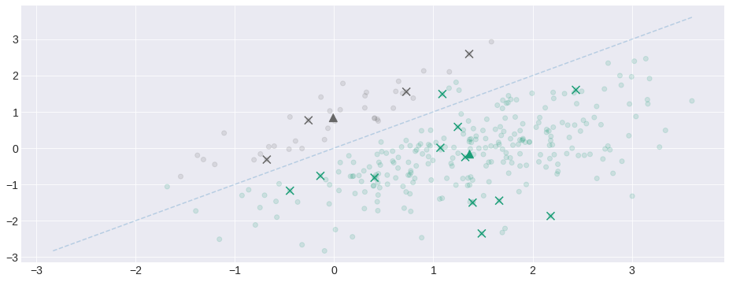
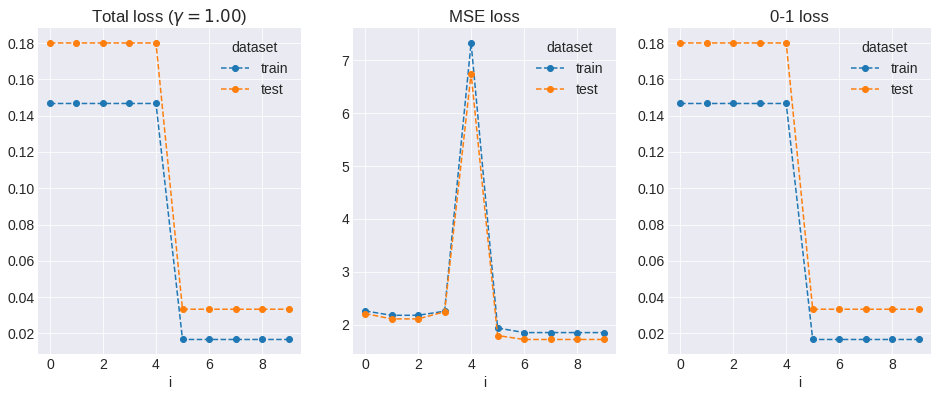
Two-stage Distributed Encoders¶
npr.seed(0)
for γ in [0, 0.25, 0.5, 0.75, 1]:
# Untreated corner cases (both will break the code):
# - If p is too large, there will be proto-regions without points.
# - If rate_exp is too large, some integer will be proto-region-less
p = [5, 10]
rate_exp = [2, 3]
ρ = 0.4
sep = 0.2
X, _ = generate_2d_dataset(300, ρ, sep)
encoders = [
LocalEncoder(DA(np.linspace(-1.5, 1.5, p[0]), dims='p').expand_dims(d=1),
DA(npr.randint(rate_exp[0], size=p[0]), dims='p'),
rate_exp[0]),
LocalEncoder(DA(np.linspace(-1.5, 1.5, p[1]), dims='p').expand_dims(d=1),
DA(npr.randint(rate_exp[1], size=p[1]), dims='p'),
rate_exp[1])
]
enc = DistributedEncoder(encoders)
dec = FusionDecoder.init_from_encoder(X, enc, γ, w)
losses = list()
Z, _ = generate_2d_dataset(300, ρ, sep)
for i in range(30):
dec = dec.optimize(X, enc, γ, w)
enc = enc.optimize(X, dec, calc_total_loss(γ))
losses += [
{'dataset': 'train',
'loss_type': 'total',
'value': calc_total_loss(γ)(X, dec(enc(X))).mean().item(),
'i': i},
{'dataset': 'test',
'loss_type': 'total',
'value': calc_total_loss(γ)(Z, dec(enc(Z))).mean().item(),
'i': i},
{'dataset': 'train',
'loss_type': 'mse',
'value': calc_mse_loss(X, dec(enc(X))).mean().item(),
'i': i},
{'dataset': 'test',
'loss_type': 'mse',
'value': calc_mse_loss(Z, dec(enc(Z))).mean().item(),
'i': i},
{'dataset': 'train',
'loss_type': 'zero_one',
'value': calc_zero_one_loss(X, dec(enc(X))).mean().item(),
'i': i},
{'dataset': 'test',
'loss_type': 'zero_one',
'value': calc_zero_one_loss(Z, dec(enc(Z))).mean().item(),
'i': i},
]
losses = (pd.DataFrame(losses)
.pivot('i', ['loss_type', 'dataset'], 'value'))
plt.scatter(*dec.codebook.T, c=np.sign(dec.codebook @ w), marker='^', s=100)
plt.scatter(*X.T, c=np.sign(dec(enc(X)) @ w), alpha=0.15)
plt.xticks(enc[0].boundaries.round(2), '')
plt.yticks(enc[1].boundaries.round(2), '')
plot_decision_boundary(X)
plt.show()
(losses['total']
.plot(style='o--',
ax=plt.subplot(1, 3, 1),
title=f'Total loss ($\gamma = {γ:.2f}$)'))
(losses['mse']
.plot(style='o--',
ax=plt.subplot(1, 3, 2),
title='MSE loss'))
(losses['zero_one']
.plot(style='o--',
ax=plt.subplot(1, 3, 3),
title='0-1 loss'))
plt.show()
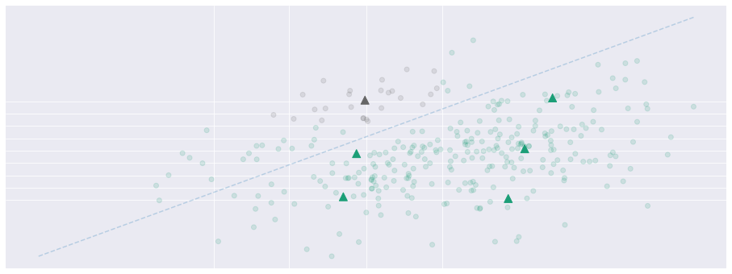
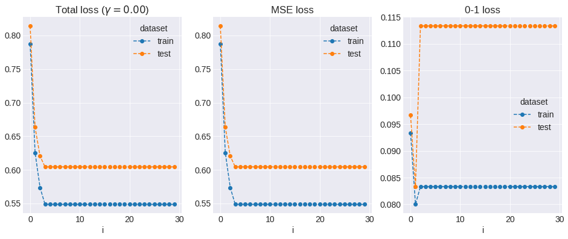
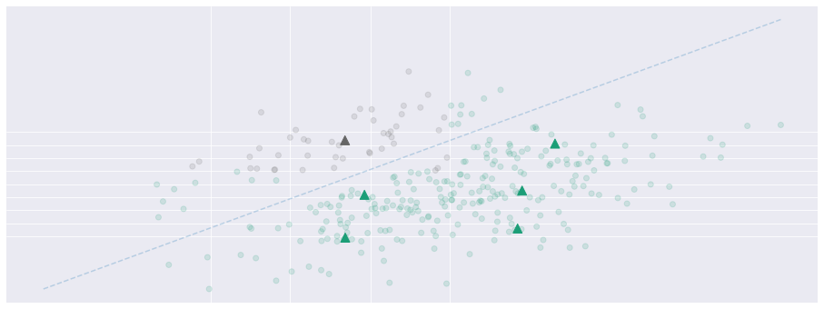
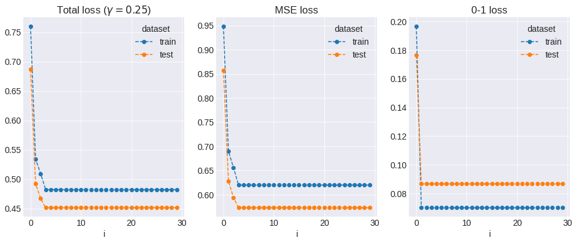
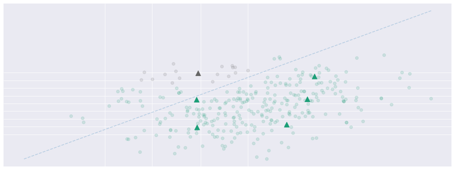
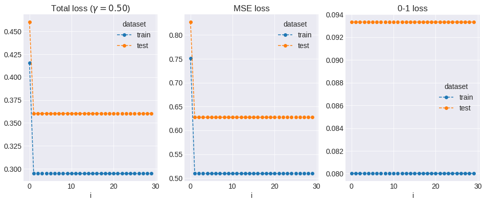
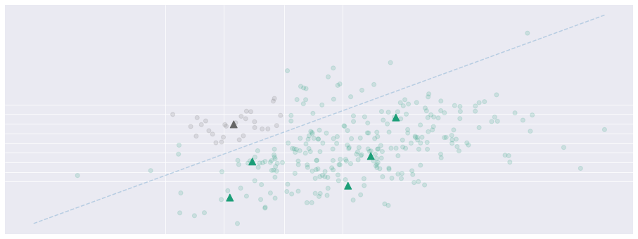
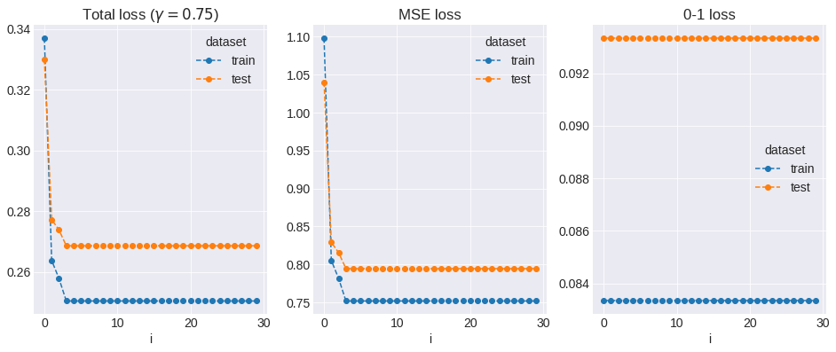
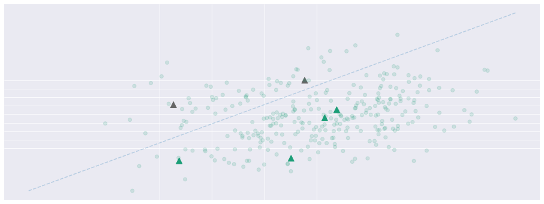
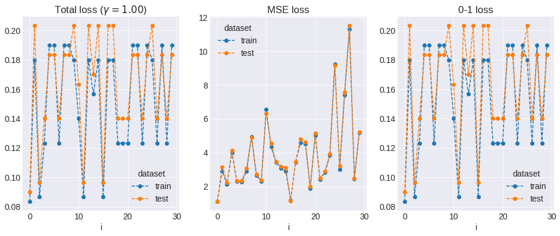
Observations¶
Optimizing the 0-1 loss directly will most likely place the codebook on the decision boundary.
MSE and 0-1 loss have different scales, therefore the total loss is sensitive to \(\gamma\) only in specific ranges.
MSE and 0-1 loss are not orthogonal.